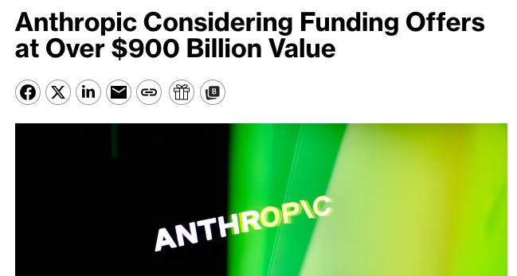
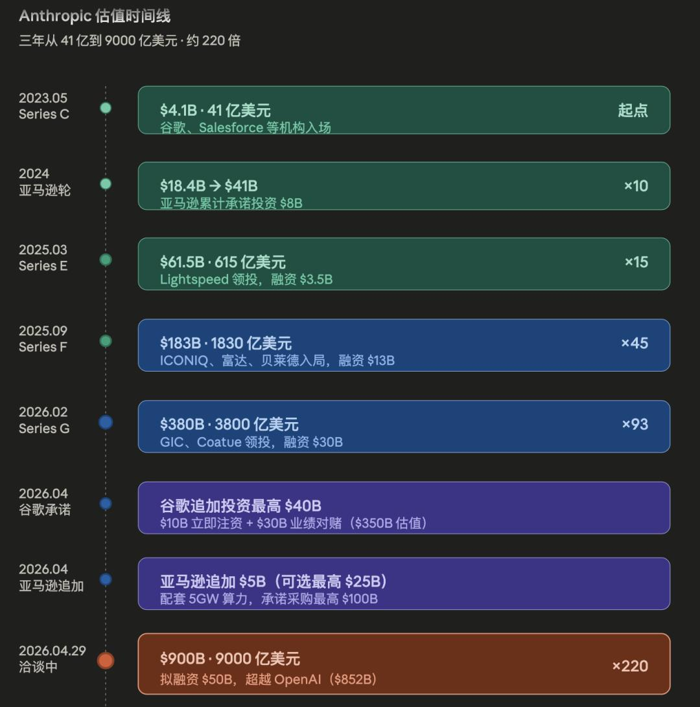
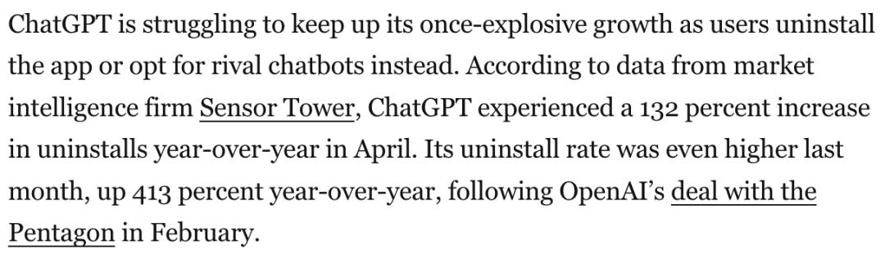
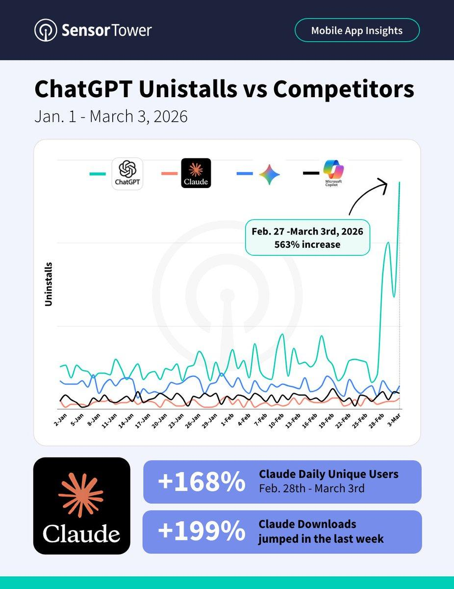
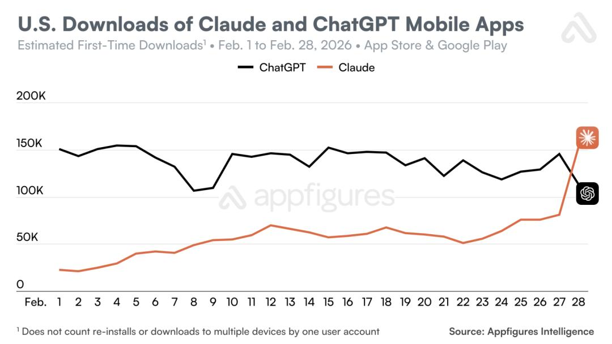
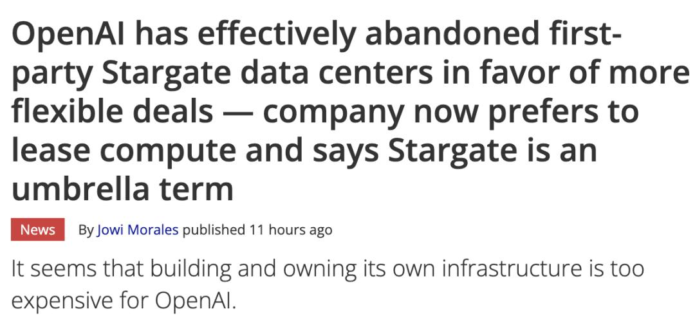
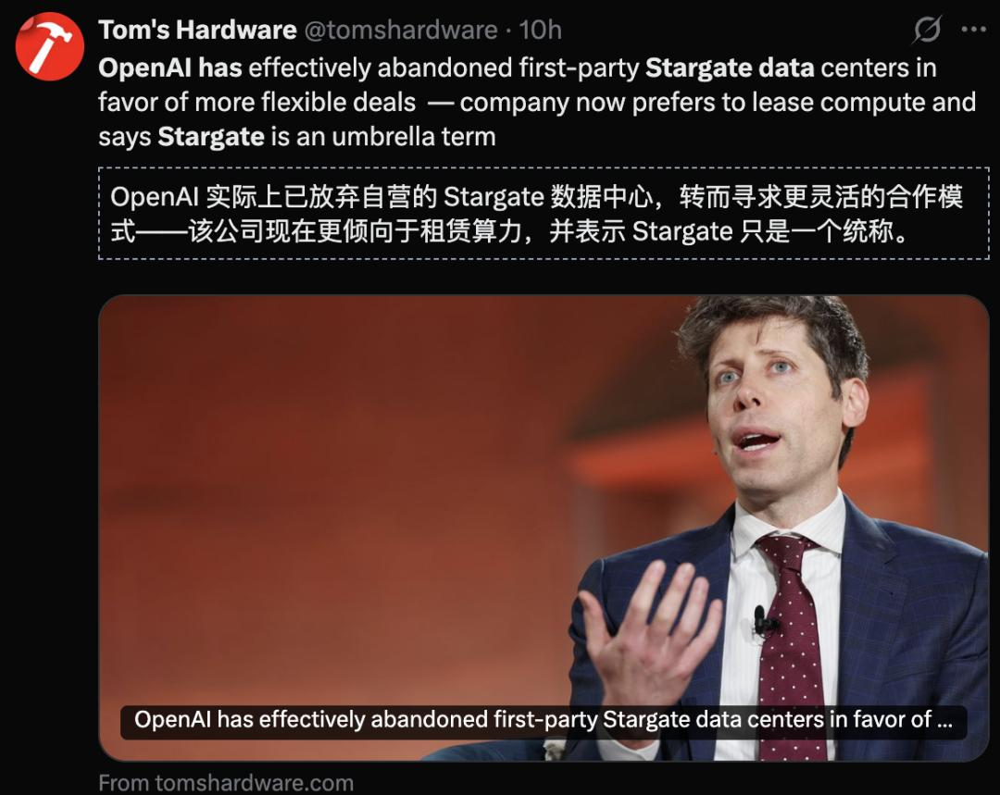

ChatGPT卸载率飙升413%，Anthropic估值9000亿：AI双雄命运交叉
【导读】Anthropic估值即将冲破9000亿美元，OpenAI的用户正在用脚投票——两家公司的命运曲线，正在交叉。
AI界深水炸弹！
4月29日，Anthropic被爆正在谈判新一轮融资，估值可能突破9000亿美元。

如果交割完成，这家成立不到四年的公司将一举超越OpenAI，成为地球上最贵的AI独角兽。
9000亿美元。
这个数字意味着什么？
放在A股，它比贵州茅台的市值还高。放在硅谷，它把OpenAI苦心经营了十年的估值王座，一脚踢翻。
更耐人寻味的是时间线。就在几个月前，Anthropic的估值还是600亿美元。
谷歌和亚马逊先后以3500亿美元估值向其注资，合计承诺投入高达650亿美元。从600亿到9000亿，不到一年，15倍。

Claude生成的Anthropic估值时间线
资本不说谎。当全世界最精明的钱疯狂涌向同一个方向，一定有什么东西变了。
变的是什么？
答案触目惊心——
根据市场情报公司Sensor Tower的数据，ChatGPT今年4月的卸载量同比增加了132%。而在上个月，其卸载率甚至更高，同比上升了413%。

ChatGPT的卸载量一度暴涨了563%。同一时期，Claude的下载量一周激增199%。

在多个国家，Claude一度登顶iPhone免费应用排行榜。

Claude在美国的单日下载量首次超过了ChatGPT。2月28日，该应用冲上美国App Store免费应用榜首，并一直保持到3月2日，短短一周内排名跃升了20多位。Claude还在比利时、加拿大、德国、卢森堡、挪威和瑞士的iPhone免费应用排行榜上登顶
用户在用脚投票。而且是踩着油门投的。
OpenAI：帝国的裂缝从内部开始
表面上看，OpenAI依然庞大。
GPT系列坐拥数亿用户，Codex刚刚掀起新一轮热潮，星际之门项目号称要砸5000亿美元建算力基础设施。
但帝国的裂缝，往往先从内部裂开。
如果说用户流失是皮肤之痛，那么「星际之门」（Stargate）的缩水则是OpenAI的断骨之伤。

据媒体调查，星际之门项目的实际进展远不如PPT上那么光鲜。
5000亿美元。10座核电站。人类通往未来的唯一通道。 现在，它成了一张缩水的租房合同。
英国的项目，停了。 挪威的项目，砍了。 德克萨斯州的旗舰基地，放弃了。
奥特曼说这叫「灵活心态」。合作伙伴说这叫「过河拆桥」。软银在愤怒，甲骨文在算账，微软在废墟边默默捡漏。
这幕后的潜台词再清楚不过：当 OpenAI开始推脱基建责任，它就失去了对物理世界的控制权。
资金到位节奏、算力中心选址、合作方协调——每一个环节都在磨。
「进度比预期慢了很多。」

与此同时，OpenAI正在经历一场静默的人才失血。
Dario Amodei——Anthropic的创始人兼CEO——本身就是OpenAI的前研究副总裁。
他带走的不只是自己，还有一批OpenAI最核心的安全研究员。
谈离开 OpenAI时，他直言：「与其留下来争论别人的愿景，不如带上你信任的人，去把自己的愿景做出来。」
这种出走从未停止。过去两年，OpenAI的对齐团队、安全团队持续有骨干流向Anthropic。
一个公司最值钱的资产是什么？不是用户数，不是估值，是那群能定义下一代模型的人。
当这群人选择离开，方向本身就是答案。
Anthropic：从「安全实验室」到「最贵独角兽」
Anthropic的崛起路径，和硅谷的常规叙事完全不同。
它不是靠烧钱抢用户起家的。
它的起点是一篇关于AI安全的论文，它的卖点是「Constitutional AI」——用宪法约束模型行为。在很长一段时间里，硅谷主流的看法是：这帮人太理想主义了，做不大。
然后，Claude 3.5 Sonnet发布了。
编程能力碾压GPT-4o，长上下文理解遥遥领先，幻觉率大幅降低。

开发者社区的风向一夜之间转了。Reddit、Hacker News、X上到处都是同一句话：「我把ChatGPT Plus退了，换Claude了。」
不是一个人这么说，是成千上万人这么说。
更关键的是企业端。AWS上Claude的API调用量在过去半年翻了不止一番。
越来越多的企业客户开始把核心业务从GPT迁移到Claude——不是因为便宜，是因为好用。

谷歌看到了这一点，所以砸了钱。亚马逊看到了这一点，所以也砸了钱。两家巨头合计承诺650亿美元，赌的不是Anthropic的现在，是它定义下一代AI的能力。
但，OpenAI真的输了吗？
先别急着给OpenAI写墓志铭。
GPT-5系列的迭代速度依然惊人。5.5刚刚落地，后台日志里就冒出了5.6的影子。

Codex作为智能体工具正在全面起飞，开发者生态的护城河不是一朝一夕能攻破的。
OpenAI的另一张底牌是规模。数亿月活用户、与微软的深度绑定、遍布全球的企业客户——这些存量优势不会因为一轮融资新闻就蒸发。
历史上，估值超越从来不等于胜负已定。
2012年Facebook上市时，很多人觉得谷歌的社交梦碎了。十年后再看，谷歌的搜索帝国从未真正被威胁。
AI竞赛的残酷之处在于：今天的王座，下一轮模型发布后可能就不作数了。
风起青萍之末：大事正在发生
把视角拉远，这不是一个「谁赢谁输」的故事。
这是一个「AI行业的权力结构正在被重写」的故事。
两年前，OpenAI是唯一的巨星。
一年前，谷歌Gemini开始追赶。
今天，Anthropic冲到了估值第一的位置。
与此同时，xAI在烧钱、Meta在搅局、开源AI在追赶。

赢家不再只有一个。AI正在从「一超独霸」走向「群雄割据」。
而在这场混战中，真正决定胜负的变量只有一个——谁能先做出下一代模型。
不是谁的PPT更好看，不是谁的融资更多。
AI不是魔法，是重工业。它需要天文数字的电费，需要信誉，需要冷酷的财务纪律。
Anthropic的9000亿估值，本质上是市场在押注：下一个「iPhone时刻」，可能不在OpenAI手里。
参考资料：
https\://futurism.com/artificial-intelligence/downloads-chatgpt-slowing-worst-time-openai
https\://www.bloomberg.com/news/articles/2026-04-29/anthropic-considering-funding-offers-at-over-900-billion-value?srnd=phx-technology
https\://www.ft.com/content/664a57e2-dffa-401e-81ad-55129ffb0e89?syn-25a6b1a6=1